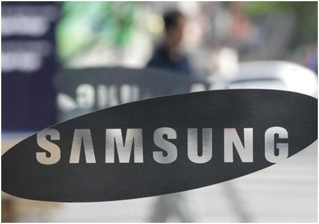
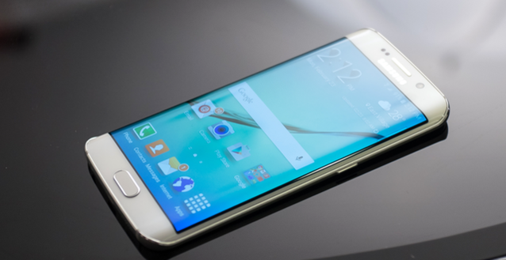

三星在周三发布了2015财年第三财季的财报，运营利润同比大增了79.8%至63亿美元，受到财报的刺激三星的股价大涨8.7%，也创下近6年以来
最大涨幅，这是三星公司自2013年第三财季以来首次增长的财报，投资人感到振奋也理所当然。不过利润大涨的主要来源是三星半导体业务和
液晶屏业务，而三星手机业务还处于市场份额和利润下降的泥沼。三星半导体业务在第三季度的利润达到3.4万亿韩元，远高于去年同期的1.86
万亿韩元，半导体业务差不多贡献了三星总利润的半壁江山，已经超过手机业务成为三星集团最赚钱的业务。而讽刺的是，推动三星半导体业务
利润狂涨的是苹果公司，苹果iPhone 6s手机的A9处理器和手机存储等零部件均由三星提供，而苹果公司在上个季度为备货下了大量的订单，故
而推动了三星业绩的上涨。三星手机业务也有增长，不过在半导体业务的对比下就有些失色。

三星公司此前受手机业务下滑的拖累，财报已经连续下滑7个财季，三星的手机在高端市场不敌苹果iPhone手机，在中低端市场遭到中国国产
手机众多品牌的侵蚀，虽然三星还是智能手机出货量最大的厂商，但其市场份额和利润持续下降。而受到全球智能手机市场增长减缓的影响，
三星手机业务短时间不可能恢复2011-2013年那种大幅的增长速度。三星在8月刚刚推出了两款智能手机Galaxy Note 5和Galaxy S6 Edge+，抢
在苹果iPhone 6s发布之前抢占市场的意图很明显，但出货量和销量并不及预期，也导致三星的股价在9月承压，三星一度打算回购股票以支撑
股价。虽然三星在上一财季的财报给出了超出预期的表现，手机业务的危机并没有解除，前有大敌后有群狼追兵的局面没有改变，因为在印度
和非洲等市场的表现良好，三星手机的出货量同比增长，但营销费用的增长更快让利润仍然同比下降。此外，三星手机业务的增长的一个表面
原因是汇率因素，因为韩元近期兑美元有升值，故而以美元标价销售以韩元计算营收和利润对三星的整体财报有提振。但美联储很可能在10月
火12月加息的预期会让美元回流更强，更多新兴国家的货币会贬值，韩元汇率的优势届时会受到抑制，三星的财报可能也会打折扣。

三星全产业链生产的优势在这次的财报中体现的淋漓尽致，半导体业务集团生产的手机液晶屏被越来越多的厂商使用，三星也在扩大产能大赚
特赚。但作为三星高端手机主打特色的曲面屏的良品率一直不高，三星已经不在OLED曲面电视上发力，产能都转移到生产Galaxy Edge的曲面屏，
但生产的速度仍然赶不上市场需求，故而也就无法对手机业务整体改观起到作用。三星维持世界最大智能手机生产商的地位还是依靠出货量，
但中低端手机的利润在讲究“性价比”的中国国产智能手机的进攻中不断减少，三星也想通过曲面屏和互联网增值服务拉开与中国厂商的距离，
但曲面屏的产能不足在目前仍然是限制因素。而紧随Apple Pay推出的移动支付服务Samsung Pay又被曝光遭到黑客的入侵，三星手机业务真是
让高管焦头烂额。三星是通过收购美国初创公司Loop Pay切入移动支付服务的，Loop Pay在近场支付上有比Apple Pay便利的一面，但Loop Pay
内部办公网络遭到中国黑客的攻击。三星称被黑客入侵的Loop Pay办公网络与Samsung Pay服务是分离的，故而Samsung Pay服务没有受到影响，
用户的个人支付信息没有泄露，Loop Pay3月被收购可能在3、4月就被入侵，但三星是8月才发现入侵，黑客入侵的调查是否在两个月能全部完
成，三星和Loop Pay公司并没有解释。
三星的手机业务在曲面屏的产能上来之前，可能很难拉开除苹果iPhone之外手机的距离，因为手机的硬件很容易被模仿和赶上，而三星手机业
务此前寄希望的Samsung Pay服务是否完全摆脱黑客入侵的影响，还要时间证明。三星手机业务需要大的改变才能从苹果和中国国产厂商的步步
紧逼中挽回一点点份额，否则第四财季还无法停止利润下降的趋势，恐怕一两个季度后，三星半导体业务的盈利也无法拖动手机业务的亏损了。
作者：IT新闻
链接：https://www.jianshu.com/p/06fe27a37651
來源：简书
著作权归作者所有。商业转载请联系作者获得授权，非商业转载请注明出处。